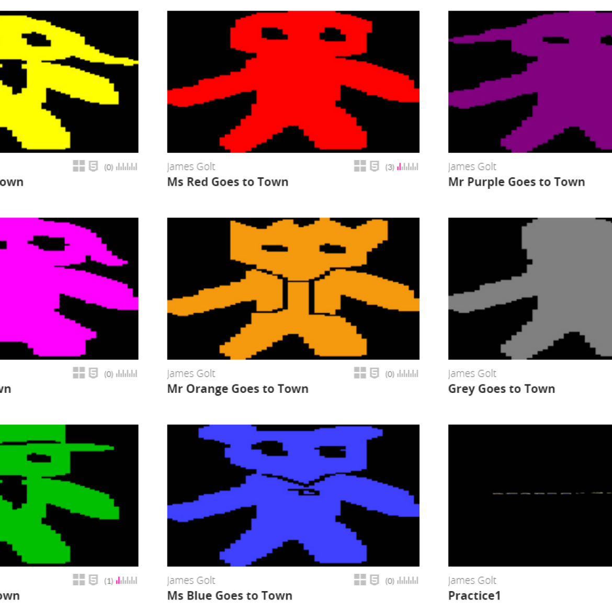

a kid bugged me for advice once but wouldn’t take it

Games 33-41/100
x
a kid bugged me for advice once but wouldn’t take it
Year2014
AvailabilityDocumented

Games 33-41/100
a kid bugged me for advice once but wouldn’t take it
a kid bugged me for advice once but wouldn’t take it